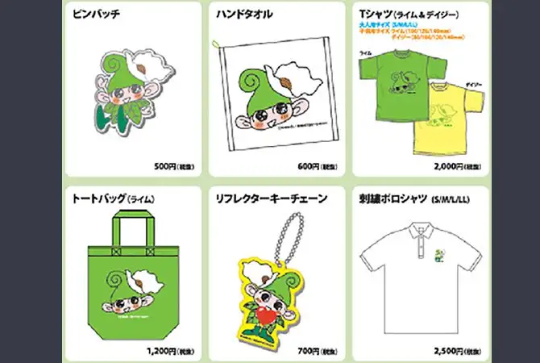
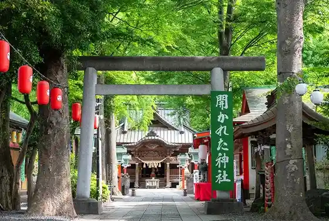
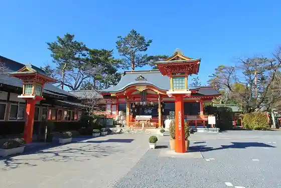
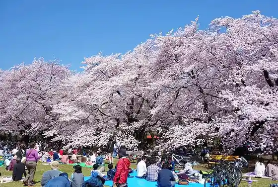
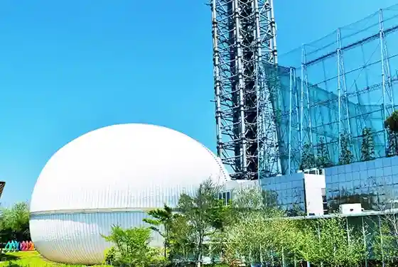

Nishitokyo, Tokyo: things to do, food and stays
Nishitokyo · Tokyo
Nishitokyo
Highlighted on the Tokyo map.

Sights
Ikoiina Kanrenshohin Guzzu Hambaiten Ho (6 Tenpo)
Tanashi Shrine

Higashifushimi Inari Shrine

Koganei Park

Tamarokuto Science Center

(Ikoiina) Zo
Jomon (Shita no Ya Mura no Nakama Tachi) Monyumento
Shimotsuke Tani Iseki ((Shiita) to (no Ya)) Kanren Guzzu Hambaiten (4 Tenpo)
Toritsu Sayama Sakai Greenway
Dining
Ramen Jiro Hibari Ke Oka Ekimae
ラーメン二郎 ひばりヶ丘駅前店

Noodle restaurant in Nishitokyo, Tokyo.
Menya Mizukaze
麺屋 瑞風

Noodle restaurant in Nishitokyo, Tokyo.
Tanaka Aozora Shoten
たなか青空笑店

Noodle restaurant in Nishitokyo, Tokyo.
Ramen Chop
ラーメンチョップ

Noodle restaurant in Nishitokyo, Tokyo.
Mensho Himuroku
麺匠 ヒムロク

Noodle restaurant in Nishitokyo, Tokyo.
Sunny
サニー

Noodle restaurant in Nishitokyo, Tokyo.
Ramen Kureha
ラーメンくれは

Noodle restaurant in Nishitokyo, Tokyo.
Ikko Koku
一国

Restaurant in Nishitokyo, Tokyo.
Menya Taniguchi
麺や 谷口

Noodle restaurant in Nishitokyo, Tokyo.
INOSHOW
イノショウ

Noodle restaurant in Nishitokyo, Tokyo.
COMMA COFFEE
コンマ コーヒー

Cafe in Nishitokyo, Tokyo.
Kazuki
一喜

Noodle restaurant in Nishitokyo, Tokyo.
Tanashi Taishoken
田無 大勝軒

Noodle restaurant in Nishitokyo, Tokyo.
Menya Takara
麺家 宝

Noodle restaurant in Nishitokyo, Tokyo.
Saketomeshi Momoharu Reservation
サケトメシ 百春

Seafood restaurant in Nishitokyo, Tokyo.
Chuka Soba Nishino
中華そば 西の

Noodle restaurant in Nishitokyo, Tokyo.
PAN STAGE my Higashifushimi ten
パンステージ・マイ 東伏見店

Sweets and bakery shop in Nishitokyo, Tokyo.
Sakahei
坂平

Seafood restaurant in Nishitokyo, Tokyo.
Men Kobo Oban
麺工房 大番

Noodle restaurant in Nishitokyo, Tokyo.
Restaurant Lumine
レストランルミネ

Meat restaurant in Nishitokyo, Tokyo.
Sanjou
山城

Chinese or Asian restaurant in Nishitokyo, Tokyo.
Bokka Kyo Tanashi ten Reservation
墨花居 田無店

Noodle restaurant in Nishitokyo, Tokyo.
TRATTORIA E PIZZERIA L'INCANTO Reservation
トラットリア エ ピッツェリア リンカント

European restaurant in Nishitokyo, Tokyo.
Hinode Tonkatsu
とんかつ 日の出

Meat restaurant in Nishitokyo, Tokyo.
Tsukiji no Chuka Soba Izobachi
築地の中華そば 伊蔵八

Noodle restaurant in Nishitokyo, Tokyo.
Cocotte Reservation
ココット

Meat restaurant in Nishitokyo, Tokyo.
Abura-soba 5 Tsubo
油そば5坪

Noodle restaurant in Nishitokyo, Tokyo.
Sarashina Tanashi ten
さらしな 田無店

Noodle restaurant in Nishitokyo, Tokyo.
chuugokuryou touen Hibarigaoka ten Reservation
中国料理 唐苑 ひばりヶ丘店

Chinese or Asian restaurant in Nishitokyo, Tokyo.
Taiyaki no Yoshikawa
鯛焼きのよしかわ

Restaurant in Nishitokyo, Tokyo.
Menya Jaian Tanashi honten
麺屋 ジャイアン 田無本店

Noodle restaurant in Nishitokyo, Tokyo.
Ishiusuhiki Teuchi Soba Shinji
石臼挽き手打ち蕎麦進士

Noodle restaurant in Nishitokyo, Tokyo.
Karune
花瑠音

Meat restaurant in Nishitokyo, Tokyo.
Fushimi Dango
ふしみだんご

Sweets and bakery shop in Nishitokyo, Tokyo.
Tora Usa Reservation
虎兎

Meat restaurant in Nishitokyo, Tokyo.
Le Magnolier
ル マグノリア

Sweets and bakery shop in Nishitokyo, Tokyo.